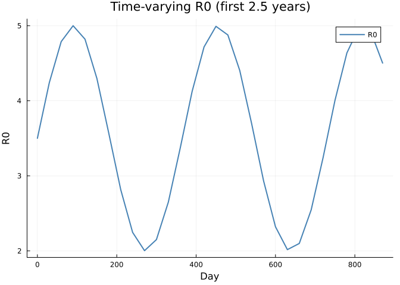
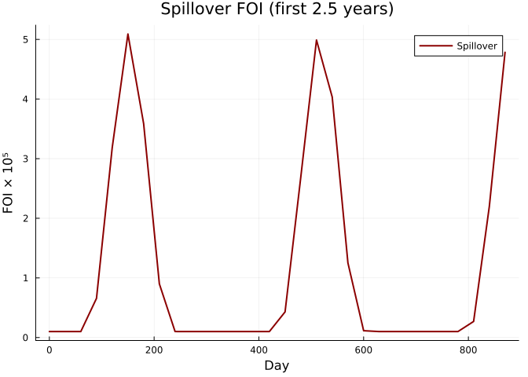
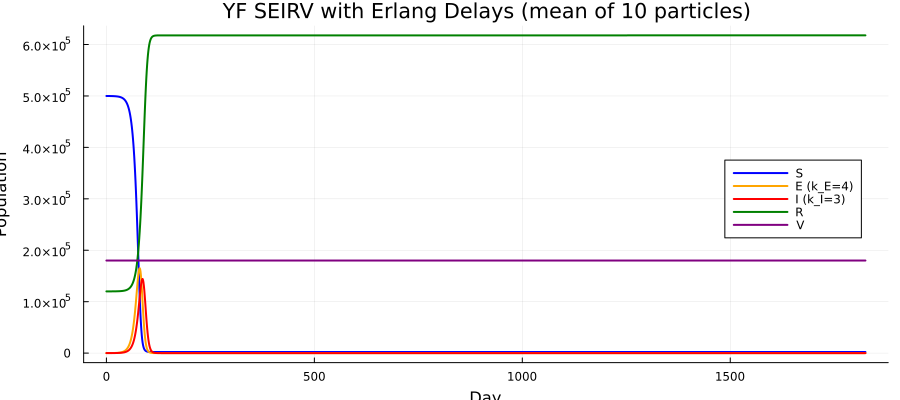
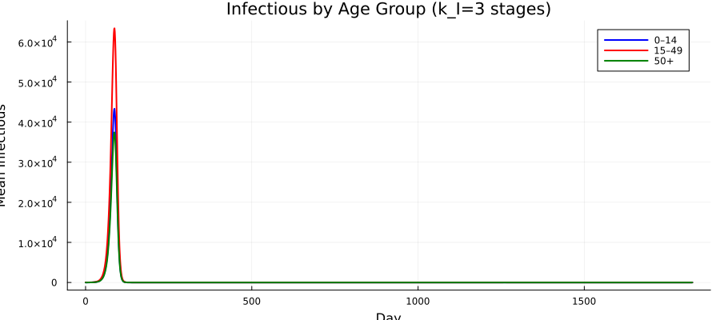
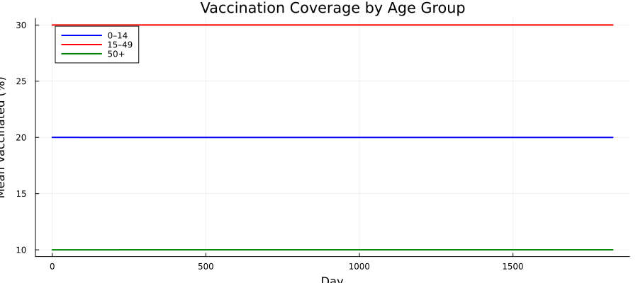
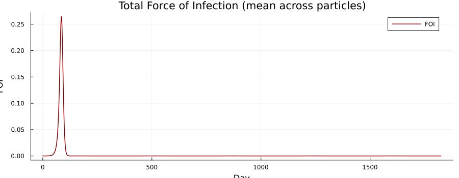
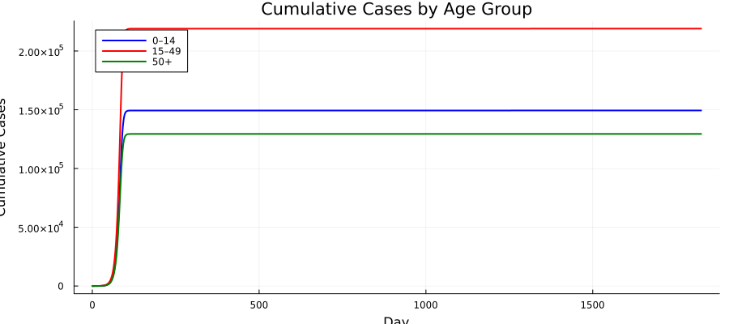
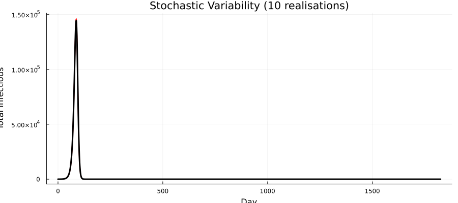
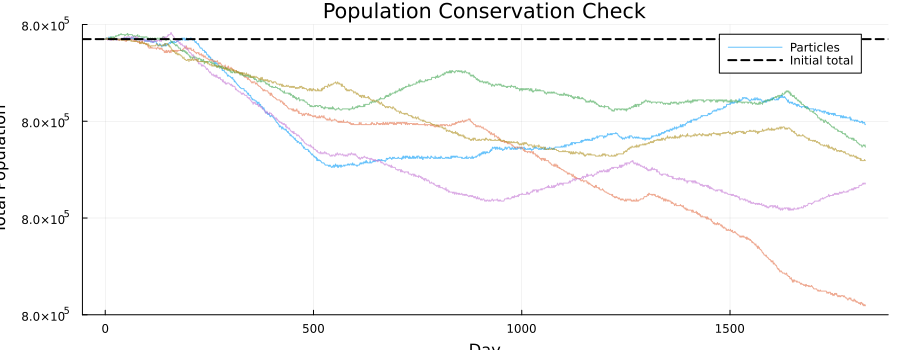

Yellow Fever SEIRV with Erlang Delay Compartments
Introduction
Standard compartmental models assume exponentially distributed sojourn times, which are memoryless — an individual who has been exposed for 4 days is just as likely to become infectious as one exposed moments ago. Real latent and infectious periods are concentrated around a mean duration.
The linear chain trick (delay compartments) addresses this by splitting a compartment into $k$ sequential sub-stages. An individual must pass through all $k$ stages, producing an Erlang-distributed total sojourn time:
| Property | $k = 1$ (Exponential) | $k$ stages (Erlang) |
|---|---|---|
| Mean | $1/\sigma$ | $1/\sigma$ |
| Variance | $1/\sigma^2$ | $1/(k\sigma^2)$ |
| CV | 1 | $1/\sqrt{k}$ |
| Shape | Memoryless | Peaked around mean |
Each sub-stage has rate $k\sigma$, so the mean sojourn time is preserved regardless of $k$. Higher $k$ produces sharper, more realistic epidemic peaks because individuals progress through compartments more synchronously.
This vignette extends the age-structured Yellow Fever SEIRV model from Vignette 20 by replacing single E and I compartments with Erlang delay chains, following the approach from Vignette 11.
Key features
| Feature | Odin construct |
|---|---|
| Age structure (3 groups) | 1D arrays indexed by N_age |
| Erlang latent period | 2D array E_chain[age, stage] with k_E stages |
| Erlang infectious period | 2D array I_chain[age, stage] with k_I stages |
| Spillover FOI | interpolate() for time-varying zoonotic force |
| Vaccination | Efficacy-weighted rate by age |
| Population dynamics | Aging flows between age groups |
using Odin
using Plots
using Statistics
using RandomModel Definition
The delay chain works as follows for each age group $a$:
- New exposures $E_\text{new}[a]$ enter the first stage:
E_chain[a, 1] - At each step, individuals progress:
E_chain[a, j]→E_chain[a, j+1] - Exits from the last stage
E_chain[a, k_E]become new infectious cases
The same pattern applies to the I chain. We use 2D arrays dim(E_chain) = c(N_age, k_E) so the DSL handles the double indexing naturally.
yf_delay = @odin begin
# === Configuration ===
N_age = parameter(3)
k_E = parameter(4)
k_I = parameter(3)
# === 1D compartment dimensions ===
dim(S) = N_age
dim(R) = N_age
dim(V) = N_age
dim(C_new) = N_age
# === 2D delay chain dimensions ===
dim(E_chain) = c(N_age, k_E)
dim(I_chain) = c(N_age, k_I)
dim(n_EE) = c(N_age, k_E)
dim(n_II) = c(N_age, k_I)
# === 1D helper dimensions ===
dim(S_0) = N_age
dim(R_0) = N_age
dim(V_0) = N_age
dim(E_new) = N_age
dim(I_new) = N_age
dim(R_new) = N_age
dim(E_total) = N_age
dim(I_total_age) = N_age
dim(P_nV) = N_age
dim(inv_P_nV) = N_age
dim(P) = N_age
dim(inv_P) = N_age
dim(vacc_eff) = N_age
dim(dP1) = N_age
dim(dP2) = N_age
# === Epidemiological rates ===
t_latent = parameter(5.0)
t_infectious = parameter(5.0)
sigma = 1.0 / t_latent
gamma = 1.0 / t_infectious
# === Time-varying R0 and spillover ===
R0_t = interpolate(R0_time, R0_value, :linear)
FOI_sp = interpolate(sp_time, sp_value, :linear)
beta = R0_t / t_infectious
# === Force of infection ===
I_total = sum(I_chain)
P_total = sum(P)
FOI_raw = beta * I_total / max(P_total, 1.0) + FOI_sp
FOI_sum = min(1.0, FOI_raw)
# === Totals per age group ===
E_total[i] = sum(E_chain[i, ])
I_total_age[i] = sum(I_chain[i, ])
P_nV[i] = max(S[i] + R[i], 1e-99)
inv_P_nV[i] = 1.0 / P_nV[i]
P[i] = max(P_nV[i] + V[i], 1e-99)
inv_P[i] = 1.0 / P[i]
# === Transition probabilities (Erlang rates) ===
p_inf = 1 - exp(-FOI_sum * dt)
p_E = 1 - exp(-k_E * sigma * dt)
p_I = 1 - exp(-k_I * gamma * dt)
# === Stochastic transitions ===
E_new[i] = Binomial(S[i], p_inf)
n_EE[i, j] = Binomial(E_chain[i, j], p_E)
n_II[i, j] = Binomial(I_chain[i, j], p_I)
# Exits from last E stage become new infectious
I_new[i] = n_EE[i, k_E]
# Exits from last I stage become new recovered
R_new[i] = n_II[i, k_I]
# === Vaccination ===
vaccine_efficacy = parameter(0.95)
vacc_eff[i] = vacc_rate[i] * vaccine_efficacy * dt
# === Demographic flows ===
dP1_rate = interpolate(dP1_time, dP1_value, :constant)
dP2_rate = interpolate(dP2_time, dP2_value, :constant)
dP1[i] = dP1_rate * 0.01
dP2[i] = dP2_rate * 0.01
# =========================================
# State updates: S (age group 1)
# =========================================
update(S[1]) = max(0.0, S[1] - E_new[1]
- vacc_eff[1] * S[1] * inv_P_nV[1]
+ dP1[1]
- dP2[1] * S[1] * inv_P[1])
# S (age groups 2..N_age)
update(S[2:N_age]) = max(0.0, S[i] - E_new[i]
- vacc_eff[i] * S[i] * inv_P_nV[i]
+ dP1[i] * S[i - 1] * inv_P[i - 1]
- dP2[i] * S[i] * inv_P[i])
# =========================================
# E delay chain: first stage receives new exposures
# =========================================
update(E_chain[1:N_age, 1]) = max(0.0, E_chain[i, 1] + E_new[i] - n_EE[i, 1])
# E delay chain: intermediate stages (progression through chain)
update(E_chain[1:N_age, 2:k_E]) = max(0.0, E_chain[i, j] + n_EE[i, j - 1] - n_EE[i, j])
# =========================================
# I delay chain: first stage receives exits from E chain
# =========================================
update(I_chain[1:N_age, 1]) = max(0.0, I_chain[i, 1] + I_new[i] - n_II[i, 1])
# I delay chain: intermediate stages
update(I_chain[1:N_age, 2:k_I]) = max(0.0, I_chain[i, j] + n_II[i, j - 1] - n_II[i, j])
# =========================================
# R (age group 1)
# =========================================
update(R[1]) = max(0.0, R[1] + R_new[1]
- vacc_eff[1] * R[1] * inv_P_nV[1]
- dP2[1] * R[1] * inv_P[1])
# R (age groups 2..N_age)
update(R[2:N_age]) = max(0.0, R[i] + R_new[i]
- vacc_eff[i] * R[i] * inv_P_nV[i]
+ dP1[i] * R[i - 1] * inv_P[i - 1]
- dP2[i] * R[i] * inv_P[i])
# =========================================
# V (age group 1)
# =========================================
update(V[1]) = max(0.0, V[1] + vacc_eff[1]
- dP2[1] * V[1] * inv_P[1])
# V (age groups 2..N_age)
update(V[2:N_age]) = max(0.0, V[i] + vacc_eff[i]
+ dP1[i] * V[i - 1] * inv_P[i - 1]
- dP2[i] * V[i] * inv_P[i])
# =========================================
# Cumulative new cases per step (reset each step)
# =========================================
initial(C_new[i], zero_every = 1) = 0
update(C_new[i]) = C_new[i] + I_new[i]
# === Outputs ===
output(FOI_total) = FOI_sum
output(total_I) = I_total
output(total_pop) = P_total
# === Initial conditions ===
initial(S[i]) = S_0[i]
initial(E_chain[i, j]) = 0
initial(I_chain[i, 1]) = 0
initial(I_chain[i, 2:k_I]) = 0
initial(R[i]) = R_0[i]
initial(V[i]) = V_0[i]
# === Parameters ===
S_0 = parameter()
R_0 = parameter()
V_0 = parameter()
vacc_rate = parameter(rank = 1)
R0_time = parameter(rank = 1)
R0_value = parameter(rank = 1)
sp_time = parameter(rank = 1)
sp_value = parameter(rank = 1)
dP1_time = parameter(rank = 1)
dP1_value = parameter(rank = 1)
dP2_time = parameter(rank = 1)
dP2_value = parameter(rank = 1)
endOdin.DustSystemGenerator{var"##OdinModel#277"}(var"##OdinModel#277"(0, [:C_new, :S, :E_chain, :I_chain, :R, :V], [:N_age, :k_E, :k_I, :t_latent, :t_infectious, :vaccine_efficacy, :S_0, :R_0, :V_0, :vacc_rate, :R0_time, :R0_value, :sp_time, :sp_value, :dP1_time, :dP1_value, :dP2_time, :dP2_value], false, false, false, true, true, Dict{Symbol, Array}()))Note the 2D partial updates: update(E_chain[1:N_age, 1]) handles the first stage across all age groups, while update(E_chain[1:N_age, 2:k_E]) handles progression through intermediate stages. This is the odin equivalent of the linear chain trick.
Parameter Setup
Demographics
We use three age groups for clarity — children (0–14), adults (15–49), and older adults (50+):
N_age = 3
k_E = 4
k_I = 3
age_labels = ["0–14", "15–49", "50+"]
age_colors = [:blue, :red, :green]
pop = [200_000.0, 400_000.0, 200_000.0]
N_total = sum(pop)
println("Total population: ", Int(N_total))Total population: 800000Initial conditions
We seed infections in the adult age group, with pre-existing immunity and vaccination:
S_0 = copy(pop)
R_0 = zeros(N_age)
V_0 = zeros(N_age)
# Pre-existing immunity
immun_frac = [0.05, 0.15, 0.25]
for i in 1:N_age
R_0[i] = round(pop[i] * immun_frac[i])
S_0[i] -= R_0[i]
end
# Pre-existing vaccination
vacc_frac = [0.20, 0.30, 0.10]
for i in 1:N_age
V_0[i] = round(pop[i] * vacc_frac[i])
S_0[i] -= V_0[i]
end
# Seed 30 infections in adult group (placed in first I_chain stage externally)
n_seed = 30.0
S_0[2] -= n_seed
println("S_0: ", S_0)
println("R_0: ", R_0)
println("V_0: ", V_0)S_0: [150000.0, 219970.0, 130000.0]
R_0: [10000.0, 60000.0, 50000.0]
V_0: [40000.0, 120000.0, 20000.0]Time-varying R0 and spillover FOI
n_years = 5
t_end = 365.0 * n_years
# R0: seasonal pattern (range 2–5)
R0_time = collect(0.0:30.0:(t_end + 30.0))
R0_value = [3.5 + 1.5 * sin(2π * t / 365) for t in R0_time]
# Spillover FOI: background + seasonal pulses
sp_time = collect(0.0:30.0:(t_end + 30.0))
sp_value = [1e-6 + 5e-5 * max(0, sin(2π * t / 365 - π/3))^3 for t in sp_time]
plot(R0_time[1:30], R0_value[1:30], lw=2, color=:steelblue,
xlabel="Day", ylabel="R0", title="Time-varying R0 (first 2.5 years)",
label="R0", legend=:topright)
plot(sp_time[1:30], sp_value[1:30] .* 1e5, lw=2, color=:darkred,
xlabel="Day", ylabel="FOI × 10⁵", title="Spillover FOI (first 2.5 years)",
label="Spillover", legend=:topright)
Demographic rates and vaccination
dP1_time = [0.0, t_end + 1.0]
dP1_value = [1.0, 1.0]
dP2_time = [0.0, t_end + 1.0]
dP2_value = [1.0, 1.0]
vacc_rate = [0.001, 0.0005, 0.0002]3-element Vector{Float64}:
0.001
0.0005
0.0002Assemble parameters
We seed infections by setting initial state directly after system creation, since initial(I_chain) is zero by default:
pars = (
N_age = Float64(N_age),
k_E = Float64(k_E),
k_I = Float64(k_I),
t_latent = 5.0,
t_infectious = 5.0,
vaccine_efficacy = 0.95,
S_0 = S_0,
R_0 = R_0,
V_0 = V_0,
vacc_rate = vacc_rate,
R0_time = R0_time,
R0_value = R0_value,
sp_time = sp_time,
sp_value = sp_value,
dP1_time = dP1_time,
dP1_value = dP1_value,
dP2_time = dP2_time,
dP2_value = dP2_value,
)(N_age = 3.0, k_E = 4.0, k_I = 3.0, t_latent = 5.0, t_infectious = 5.0, vaccine_efficacy = 0.95, S_0 = [150000.0, 219970.0, 130000.0], R_0 = [10000.0, 60000.0, 50000.0], V_0 = [40000.0, 120000.0, 20000.0], vacc_rate = [0.001, 0.0005, 0.0002], R0_time = [0.0, 30.0, 60.0, 90.0, 120.0, 150.0, 180.0, 210.0, 240.0, 270.0 … 1560.0, 1590.0, 1620.0, 1650.0, 1680.0, 1710.0, 1740.0, 1770.0, 1800.0, 1830.0], R0_value = [3.5, 4.240663325239966, 4.788145937413704, 4.999652752969836, 4.8200183059603035, 4.2960950722429, 3.564533349506796, 2.8161399597373116, 2.246111780872045, 2.003124258701912 … 4.983016385348511, 4.678474782618075, 4.066561947805955, 3.3068777338211284, 2.5975639051626143, 2.1236245609109092, 2.008673139659072, 2.2826914114889583, 2.874209596081522, 3.628947198106164], sp_time = [0.0, 30.0, 60.0, 90.0, 120.0, 150.0, 180.0, 210.0, 240.0, 270.0 … 1560.0, 1590.0, 1620.0, 1650.0, 1680.0, 1710.0, 1740.0, 1770.0, 1800.0, 1830.0], sp_value = [1.0e-6, 1.0e-6, 1.0e-6, 6.5729391399279415e-6, 3.185015736396266e-5, 5.0903611113164396e-5, 3.586190273481683e-5, 8.997773041104356e-6, 1.0094308797359557e-6, 1.0e-6 … 1.3165510956508187e-5, 4.103779800864081e-5, 4.962210888744134e-5, 2.6070287784826442e-5, 3.98770453944338e-6, 1.0e-6, 1.0e-6, 1.0e-6, 1.0e-6, 1.0e-6], dP1_time = [0.0, 1826.0], dP1_value = [1.0, 1.0], dP2_time = [0.0, 1826.0], dP2_value = [1.0, 1.0])Simulation
We run 10 stochastic particles for 5 years (1825 days). After setting initial state, we manually seed infections into the first I_chain stage for age group 2:
n_particles = 10
sim_times = collect(0.0:1.0:t_end)
# Create system and set initial state
sys = Odin.System(yf_delay, pars; dt=1.0, seed=42,
n_particles=n_particles)
Odin.reset!(sys)
# Seed infections: find I_chain[2, 1] index in state vector
# State layout: C_new[1:N_age], S[1:N_age], E_chain[N_age × k_E],
# I_chain[N_age × k_I], R[1:N_age], V[1:N_age]
# C_new: indices 1:3
# S: indices 4:6
# E_chain: indices 7:(6 + 3*4) = 7:18 (column-major: [1,1],[2,1],[3,1],[1,2],...)
# I_chain: indices 19:(18 + 3*3) = 19:27
# R: indices 28:30
# V: indices 31:33
# I_chain[2, 1] is the 2nd element (age=2, stage=1) → index 20
state = Odin.state(sys)
i_chain_offset = N_age + N_age + N_age * k_E # C_new + S + E_chain
i_chain_idx_2_1 = i_chain_offset + 2 # I_chain[2, 1] in column-major
for p in 1:n_particles
state[i_chain_idx_2_1, p] = n_seed
end
Odin.dust_system_set_state!(sys, state)
# Simulate
result = Odin.simulate(sys, sim_times)
println("Result shape: ", size(result),
" (n_state+n_output × n_particles × n_times)")Result shape: (36, 10, 1826) (n_state+n_output × n_particles × n_times)State layout
# State layout (column-major 2D arrays are flattened):
# C_new[1:N_age] → 1:3
# S[1:N_age] → 4:6
# E_chain[N_age, k_E] (3×4=12) → 7:18
# I_chain[N_age, k_I] (3×3=9) → 19:27
# R[1:N_age] → 28:30
# V[1:N_age] → 31:33
# Outputs: FOI_total, total_I, total_pop → 34, 35, 36
idx_C = 1:N_age
idx_S = (N_age+1):(2*N_age)
idx_E = (2*N_age+1):(2*N_age + N_age*k_E)
idx_I = (2*N_age + N_age*k_E + 1):(2*N_age + N_age*k_E + N_age*k_I)
idx_R = (2*N_age + N_age*k_E + N_age*k_I + 1):(2*N_age + N_age*k_E + N_age*k_I + N_age)
idx_V = (idx_R[end]+1):(idx_R[end]+N_age)
out_offset = idx_V[end]
println("C_new indices: ", idx_C)
println("S indices: ", idx_S)
println("E_chain indices: ", idx_E, " ($(N_age)×$(k_E))")
println("I_chain indices: ", idx_I, " ($(N_age)×$(k_I))")
println("R indices: ", idx_R)
println("V indices: ", idx_V)
println("Output offset: ", out_offset)C_new indices: 1:3
S indices: 4:6
E_chain indices: 7:18 (3×4)
I_chain indices: 19:27 (3×3)
R indices: 28:30
V indices: 31:33
Output offset: 33Helper to extract per-age totals from 2D chain arrays (column-major layout):
function chain_age_total(result, idx_range, n_age, k, particle, time_idx)
total = zeros(n_age)
for stage in 1:k
for a in 1:n_age
flat_idx = idx_range[1] + (stage - 1) * n_age + (a - 1)
total[a] += result[flat_idx, particle, time_idx]
end
end
return total
end
function chain_age_timeseries(result, idx_range, n_age, k)
n_p = size(result, 2)
n_t = size(result, 3)
# Mean across particles, sum across stages
ts = zeros(n_age, n_t)
for t in 1:n_t, p in 1:n_p
for stage in 1:k, a in 1:n_age
flat_idx = idx_range[1] + (stage - 1) * n_age + (a - 1)
ts[a, t] += result[flat_idx, p, t]
end
end
ts ./= n_p
return ts
endchain_age_timeseries (generic function with 1 method)Visualization
SEIRV compartments (mean across particles)
S_ts = vec(mean(sum(result[idx_S, :, :], dims=1), dims=2))
E_ts = vec(mean(sum(result[idx_E, :, :], dims=1), dims=2))
I_ts = vec(mean(sum(result[idx_I, :, :], dims=1), dims=2))
R_ts = vec(mean(sum(result[idx_R, :, :], dims=1), dims=2))
V_ts = vec(mean(sum(result[idx_V, :, :], dims=1), dims=2))
p = plot(xlabel="Day", ylabel="Population",
title="YF SEIRV with Erlang Delays (mean of $n_particles particles)",
legend=:right, size=(900, 400))
plot!(p, sim_times, S_ts, lw=2, label="S", color=:blue)
plot!(p, sim_times, E_ts, lw=2, label="E (k_E=$k_E)", color=:orange)
plot!(p, sim_times, I_ts, lw=2, label="I (k_I=$k_I)", color=:red)
plot!(p, sim_times, R_ts, lw=2, label="R", color=:green)
plot!(p, sim_times, V_ts, lw=2, label="V", color=:purple)
p
Infectious by age group
I_age_ts = chain_age_timeseries(result, idx_I, N_age, k_I)
p = plot(xlabel="Day", ylabel="Mean Infectious",
title="Infectious by Age Group (k_I=$k_I stages)",
legend=:topright, size=(900, 400))
for a in 1:N_age
plot!(p, sim_times, I_age_ts[a, :], lw=2,
color=age_colors[a], label=age_labels[a])
end
p
Vaccination coverage over time
p = plot(xlabel="Day", ylabel="Mean Vaccinated (%)",
title="Vaccination Coverage by Age Group",
legend=:topleft, size=(900, 400))
for a in 1:N_age
V_a = vec(mean(result[idx_V[a], :, :], dims=1))
coverage = V_a ./ pop[a] .* 100
plot!(p, sim_times, coverage, lw=2, color=age_colors[a],
label=age_labels[a])
end
p
Force of infection
FOI = vec(mean(result[out_offset + 1, :, :], dims=1))
plot(sim_times, FOI, lw=1.5, color=:darkred,
xlabel="Day", ylabel="FOI",
title="Total Force of Infection (mean across particles)",
label="FOI", legend=:topright, size=(900, 350))
Cumulative cases by age
cum_cases = zeros(N_age, length(sim_times))
for a in 1:N_age
daily = vec(mean(result[idx_C[a], :, :], dims=1))
cum_cases[a, :] = cumsum(daily)
end
p = plot(xlabel="Day", ylabel="Cumulative Cases",
title="Cumulative Cases by Age Group",
legend=:topleft, size=(900, 400))
for a in 1:N_age
plot!(p, sim_times, cum_cases[a, :], lw=2,
color=age_colors[a], label=age_labels[a])
end
p
Stochastic variability
p = plot(xlabel="Day", ylabel="Total Infectious",
title="Stochastic Variability ($n_particles realisations)",
legend=false, size=(900, 400))
for i in 1:n_particles
I_tot = sum(result[idx_I, i, :], dims=1)[:]
plot!(p, sim_times, I_tot, color=:red, alpha=0.4, lw=0.8)
end
I_mean = vec(mean(sum(result[idx_I, :, :], dims=1), dims=2))
plot!(p, sim_times, I_mean, color=:black, lw=3)
p
Population Conservation Check
p = plot(xlabel="Day", ylabel="Total Population",
title="Population Conservation Check", legend=:topright,
size=(900, 350))
for i in 1:min(5, n_particles)
pop_total = sum(result[idx_S, i, :], dims=1)[:] .+
sum(result[idx_E, i, :], dims=1)[:] .+
sum(result[idx_I, i, :], dims=1)[:] .+
sum(result[idx_R, i, :], dims=1)[:] .+
sum(result[idx_V, i, :], dims=1)[:]
plot!(p, sim_times, pop_total, lw=1, alpha=0.6,
label=(i == 1 ? "Particles" : ""))
end
hline!(p, [N_total], color=:black, lw=2, ls=:dash, label="Initial total")
p
pop_t = zeros(n_particles, length(sim_times))
for i in 1:n_particles
pop_t[i, :] = sum(result[idx_S, i, :], dims=1)[:] .+
sum(result[idx_E, i, :], dims=1)[:] .+
sum(result[idx_I, i, :], dims=1)[:] .+
sum(result[idx_R, i, :], dims=1)[:] .+
sum(result[idx_V, i, :], dims=1)[:]
end
println("Population at t=0: ", mean(pop_t[:, 1]))
println("Population at t=end: ", mean(pop_t[:, end]))
rel_change = abs(mean(pop_t[:, end]) - N_total) / N_total * 100
println("Relative change: ", round(rel_change, digits=4), "%")Population at t=0: 800000.0
Population at t=end: 799999.9999999898
Relative change: 0.0%Effect of Delay Stages: Exponential vs Erlang
The key comparison — how does the number of delay stages affect epidemic dynamics? With $k=1$ (standard exponential), sojourn times are highly variable. With $k=4$, individuals progress more synchronously, producing a sharper peak.
We compare using a simpler model (no vaccination, no demographics) to isolate the delay effect. We use $k=1$ (exponential) vs $k_E=4, k_I=3$ (Erlang):
GC.gc()
# Simplified model for comparison: fixed R0, no vaccination, no demographics
yf_delay_simple = @odin begin
N_age = parameter(3)
k_E = parameter(4)
k_I = parameter(3)
dim(S) = N_age
dim(R) = N_age
dim(C_new) = N_age
dim(E_chain) = c(N_age, k_E)
dim(I_chain) = c(N_age, k_I)
dim(n_EE) = c(N_age, k_E)
dim(n_II) = c(N_age, k_I)
dim(S_0) = N_age
dim(E_new) = N_age
dim(I_new) = N_age
dim(R_new) = N_age
sigma = 1.0 / t_latent
gamma = 1.0 / t_infectious
t_latent = parameter(5.0)
t_infectious = parameter(5.0)
I_total = sum(I_chain)
P_total = sum(S) + sum(E_chain) + sum(I_chain) + sum(R)
beta = R0 / t_infectious
R0 = parameter(3.0)
FOI = min(1.0, beta * I_total / max(P_total, 1.0))
p_inf = 1 - exp(-FOI * dt)
p_E = 1 - exp(-k_E * sigma * dt)
p_I = 1 - exp(-k_I * gamma * dt)
E_new[i] = Binomial(S[i], p_inf)
n_EE[i, j] = Binomial(E_chain[i, j], p_E)
n_II[i, j] = Binomial(I_chain[i, j], p_I)
I_new[i] = n_EE[i, k_E]
R_new[i] = n_II[i, k_I]
update(S[i]) = max(0.0, S[i] - E_new[i])
update(E_chain[1:N_age, 1]) = max(0.0, E_chain[i, 1] + E_new[i] - n_EE[i, 1])
update(E_chain[1:N_age, 2:k_E]) = max(0.0, E_chain[i, j] + n_EE[i, j - 1] - n_EE[i, j])
update(I_chain[1:N_age, 1]) = max(0.0, I_chain[i, 1] + I_new[i] - n_II[i, 1])
update(I_chain[1:N_age, 2:k_I]) = max(0.0, I_chain[i, j] + n_II[i, j - 1] - n_II[i, j])
update(R[i]) = R[i] + R_new[i]
initial(C_new[i], zero_every = 1) = 0
update(C_new[i]) = C_new[i] + I_new[i]
initial(S[i]) = S_0[i]
initial(E_chain[i, j]) = 0
initial(I_chain[i, 1]) = 0
initial(I_chain[i, 2:k_I]) = 0
initial(R[i]) = 0
S_0 = parameter()
endGC.gc()
compare_times = collect(0.0:1.0:365.0)
# Config 1: k=1 (Exponential)
simple_pars_1 = (N_age=3.0, k_E=1.0, k_I=1.0,
t_latent=5.0, t_infectious=5.0, R0=3.0,
S_0=S_0 .+ R_0 .+ V_0)
sys_c1 = Odin.System(yf_delay_simple, simple_pars_1; dt=1.0, seed=1)
Odin.reset!(sys_c1)
st1 = Odin.state(sys_c1)
ic_off1 = N_age + N_age + N_age * 1
st1[ic_off1 + 2, 1] = n_seed
st1[N_age + 2, 1] -= n_seed
Odin.dust_system_set_state!(sys_c1, st1)
r1 = Odin.simulate(sys_c1, compare_times)
I_exp = [sum(r1[(ic_off1+1):(ic_off1+N_age*1), 1, t]) for t in 1:length(compare_times)]
GC.gc()
# Config 2: k_E=4, k_I=3 (Erlang)
simple_pars_2 = (N_age=3.0, k_E=4.0, k_I=3.0,
t_latent=5.0, t_infectious=5.0, R0=3.0,
S_0=S_0 .+ R_0 .+ V_0)
sys_c2 = Odin.System(yf_delay_simple, simple_pars_2; dt=1.0, seed=1)
Odin.reset!(sys_c2)
st2 = Odin.state(sys_c2)
ic_off2 = N_age + N_age + N_age * 4
st2[ic_off2 + 2, 1] = n_seed
st2[N_age + 2, 1] -= n_seed
Odin.dust_system_set_state!(sys_c2, st2)
r2 = Odin.simulate(sys_c2, compare_times)
I_erl = [sum(r2[(ic_off2+1):(ic_off2+N_age*3), 1, t]) for t in 1:length(compare_times)]
plot(compare_times, I_exp, lw=2.5, color=:blue, label="k=1 (Exponential)",
xlabel="Day", ylabel="Total Infectious",
title="Effect of Delay Stages on Epidemic Peak",
legend=:topright, size=(900, 400))
plot!(compare_times, I_erl, lw=2.5, color=:red, label="k_E=4, k_I=3 (Erlang)")As expected, higher $k$ produces sharper epidemic peaks that arrive slightly earlier. The mean sojourn time is identical across all configurations — only the variance changes.
Scenario: Vaccination Impact
GC.gc()
# No vaccination scenario
pars_novacc = merge(pars, (vacc_rate = zeros(N_age),
V_0 = zeros(N_age),
S_0 = pop .- R_0))
pars_novacc = merge(pars_novacc, (S_0 = pars_novacc.S_0 .- [0, n_seed, 0],))
sys_nv = Odin.System(yf_delay, pars_novacc; dt=1.0, seed=42,
n_particles=n_particles)
Odin.reset!(sys_nv)
st_nv = Odin.state(sys_nv)
for p in 1:n_particles
st_nv[i_chain_idx_2_1, p] = n_seed
end
Odin.dust_system_set_state!(sys_nv, st_nv)
result_nv = Odin.simulate(sys_nv, sim_times)
I_vacc = vec(mean(sum(result[idx_I, :, :], dims=1), dims=2))
I_novacc = vec(mean(sum(result_nv[idx_I, :, :], dims=1), dims=2))
plot(sim_times, I_novacc, lw=2, color=:red, label="No vaccination",
xlabel="Day", ylabel="Mean Total Infectious",
title="Vaccination Impact (Erlang delays: k_E=$k_E, k_I=$k_I)",
legend=:topright, size=(900, 400))
plot!(sim_times, I_vacc, lw=2, color=:blue, label="With vaccination")Benchmark
using BenchmarkTools
@benchmark begin
sys_b = Odin.System($yf_delay, $pars; dt=1.0, seed=42,
n_particles=10)
Odin.reset!(sys_b)
Odin.simulate(sys_b, $sim_times)
endSummary
| Component | Value |
|---|---|
| Age groups | 3 (0–14, 15–49, 50+) |
| E delay stages | k_E = 4 → Erlang(4, 4σ) latent period |
| I delay stages | k_I = 3 → Erlang(3, 3γ) infectious period |
| State variables | 3 + 3 + 12 + 9 + 3 + 3 = 33 (Cnew, S, Echain, I_chain, R, V) |
| Time step | 1 day |
| Simulation | 5 years (1825 days), 10 particles |
| Stochastic draws | Binomial for infection, chain progression |
| Time-varying forcing | R0 and spillover FOI via interpolate() |
Key takeaways
2D partial array updates (
update(E_chain[1:N_age, 1])vsupdate(E_chain[1:N_age, 2:k_E])) handle the delay chain naturally — the first stage receives new exposures while intermediate stages receive flow from the previous stage.Erlang delays sharpen epidemic peaks: with $k_E = 4$ and $k_I = 3$, the variance of sojourn times is reduced by factors of 4 and 3 respectively, producing more synchronised progression and taller, narrower outbreaks.
Mean sojourn times are preserved: regardless of $k$, the mean latent period remains $1/\sigma$ and the mean infectious period remains $1/\gamma$. Only the shape of the distribution changes.
The linear chain trick adds state variables ($N_\text{age} \times k$ per compartment) but no additional parameters — $k$ controls the distribution shape while $\sigma$ and $\gamma$ control the mean.
| Step | API |
|---|---|
| Define model | @odin begin … end with 2D arrays for delay chains |
| Simulate | simulate() with manual state seeding |
| Delay comparison | Run with different $k$ values, same mean |